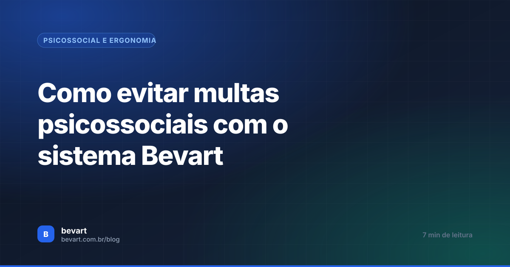
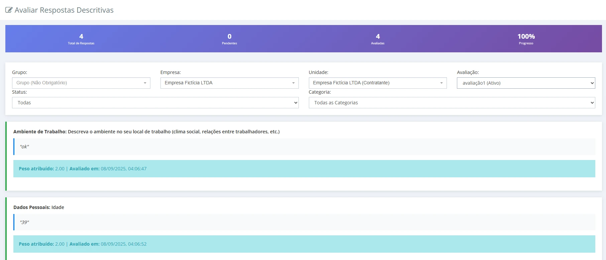
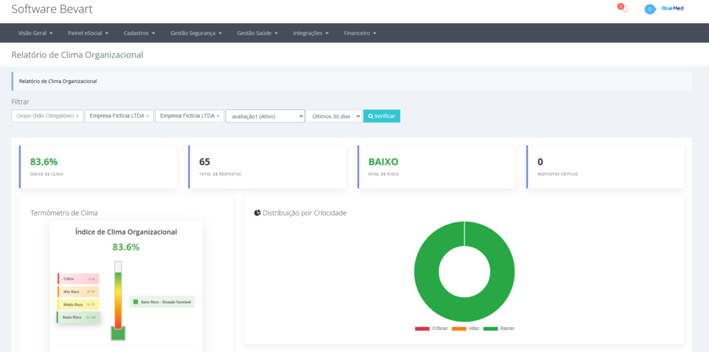
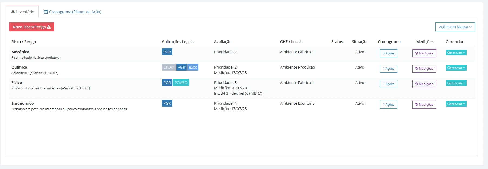

Como evitar multas psicossociais com o sistema Bevart
A nova NR-1 colocou riscos psicossociais e ergonômicos dentro do GRO. O fiscal não quer só documento: quer ver prevenção acontecendo — e isso precisa estar registrado.

O essencial em 30 segundos
- A NR-1 trouxe os fatores psicossociais para dentro do gerenciamento de riscos ocupacionais: eles entram no inventário de riscos como qualquer outro perigo.
- Multa não vem de "ter risco psicossocial" — vem de não conseguir provar que existe processo preventivo: avaliação, indicador, plano de ação e evidência.
- Ergonomia e saúde mental caminham juntas e devem ser tratadas no mesmo plano, não em documentos separados.
As atualizações do Ministério do Trabalho e Emprego na NR-1 trouxeram uma realidade nova para as empresas brasileiras: os riscos psicossociais e ergonômicos precisam fazer parte do gerenciamento de riscos ocupacionais, dentro do GRO e do PGR.
E muita empresa ainda não entendeu o ponto central dessa mudança:
O fiscal não quer apenas documentos. Ele quer ver prevenção acontecendo na prática.
É aí que a ferramenta deixa de ser detalhe. Quem consegue mostrar o caminho completo — como identificou, como mediu, o que decidiu e o que já executou — sai de uma fiscalização em outra posição.
O que mudou com a nova NR-1
A atualização reforça a necessidade de identificar, avaliar e controlar fatores que afetam a saúde mental de quem trabalha. Na prática, entram na conta:
- estresse ocupacional;
- sobrecarga mental;
- assédio;
- pressão excessiva por metas e prazos;
- clima organizacional ruim;
- falta de ergonomia;
- ambientes psicologicamente nocivos.
Ou seja: não basta mais entregar um PGR genérico. É preciso demonstrar que existe um processo contínuo de identificação de riscos e de criação de planos de ação preventivos.
O problema da maioria das empresas
Na rotina, o padrão se repete. Grande parte das empresas:
- não sabe como medir risco psicossocial;
- não tem indicador nenhum sobre a saúde mental da organização;
- não tem histórico documentado de ações preventivas;
- não consegue provar ao fiscal que está atuando antes do problema.
É exatamente daí que saem as notificações. Não do risco em si — da ausência de gestão sobre ele.
Fator psicossocial identificado e não registrado no inventário é pior do que não ter avaliado: a empresa demonstra que sabia do risco e não o incluiu no gerenciamento.
Como o Bevart ajuda a evitar multas
1. Questionários de risco psicossocial
O Bevart tem questionários específicos para análise psicossocial, que funcionam como diagnóstico da saúde mental da empresa. As perguntas seguem uma lógica de critérios e pesos baseada em práticas reconhecidas de análise ocupacional — cada resposta vale um valor, e o conjunto vira número.

Com isso, o sistema gera:
- indicadores de risco;
- termômetro do clima organizacional;
- níveis de alerta;
- áreas críticas da empresa;
- setores com maior risco psicossocial.

2. Um GPS para o profissional de SST
O objetivo não é preencher formulário. É entregar ao profissional uma visão clara de onde estão os gargalos, quais setores precisam de atenção, quais fatores estão afetando os colaboradores e onde existe maior risco de adoecimento mental.
Na prática, o sistema funciona como um GPS de prevenção. E prevenção é exatamente o que a NR-1 cobra.
Medir clima é o começo, provar prevenção é o que conta
No Bevart, o resultado do questionário vira perigo no inventário, plano de ação com responsável e prazo, e evidência anexada. Tudo no mesmo lugar em que o PGR é gerado.
Criar conta grátisO verdadeiro trabalho do técnico é prevenir
Depois de identificar os riscos, o profissional consegue:
- adicionar os perigos no inventário de riscos;
- relacionar os fatores psicossociais às funções e aos setores;
- criar planos de ação;
- definir medidas preventivas;
- registrar evidências de acompanhamento;
- demonstrar a evolução das ações ao longo do tempo.

Isso muda o cenário diante de uma fiscalização. Quando existe análise, inventário, plano de ação, monitoramento e evidência, a empresa demonstra que atua dentro do GRO — e o risco de multa cai drasticamente.
Ergonomia também faz parte da saúde mental
Outro ponto importante da nova NR-1 é a relação entre ergonomia e saúde mental. Ambiente desconfortável, sobrecarga física, postura inadequada e condição ruim de trabalho batem direto no psicológico de quem está ali todo dia.
O inventário do Bevart cobre riscos ergonômicos e ocupacionais no mesmo lugar, o que permite integrar ergonomia e saúde mental dentro do mesmo plano de prevenção — em vez de dois documentos que nunca se olham.
Ao fechar uma avaliação psicossocial, cruze o resultado com o mapa ergonômico do mesmo setor. Quando os dois apontam para o mesmo posto de trabalho, a prioridade do plano de ação deixa de ser discutível.
O fiscal quer ver ação
Muita empresa acredita que o problema se resolve tendo documento. O foco da fiscalização é outro:
Existe um processo preventivo ativo?
Se a empresa consegue mostrar que realiza avaliações psicossociais, monitora indicadores, mantém o inventário atualizado, executa planos de ação, acompanha riscos ergonômicos e registra medidas preventivas, ela demonstra conformidade prática com a NR-1. Na hora da fiscalização, apresente os planos de ação dentro do PGR e explique a análise que os originou.
Conclusão: papel não é prevenção
A nova NR-1 desloca o foco do documento para a prevenção real. Empresa que continuar tratando saúde mental como burocracia fica mais exposta a notificação e multa. Empresa que usa uma ferramenta para organizar o processo transforma a exigência em algo estratégico, organizado e defensável.
Porque, no fim, SST não é preencher documento. É evitar que o problema aconteça — e conseguir provar que você estava trabalhando para isso. Se quiser entender o módulo por dentro, veja a página de gestão de riscos psicossociais.
Perguntas frequentes
A empresa pode ser multada por risco psicossocial?
A autuação não é por existir risco psicossocial, e sim por não gerenciá-lo. Se o fator psicossocial não aparece no inventário de riscos, não tem avaliação e não gerou plano de ação, a empresa está descumprindo o gerenciamento de riscos ocupacionais previsto na NR-1.
Como identificar riscos psicossociais na prática?
Por levantamento estruturado: questionário aplicado aos trabalhadores, com critérios e pesos definidos, somado a dados que a empresa já tem, como afastamentos, rotatividade, reclamações e histórico de conflitos. O resultado precisa virar indicador por setor, não uma impressão geral.
O que o fiscal pede sobre riscos psicossociais?
Evidência de processo: como os fatores foram identificados, como foram avaliados, o que foi decidido a partir disso e o que já foi executado, com responsável, prazo e comprovação. Documento sem histórico de ação não demonstra gerenciamento.
Ergonomia entra na mesma conta que saúde mental?
Entram no mesmo inventário e costumam se reforçar. Posto inadequado, sobrecarga física e ritmo imposto aparecem tanto como risco ergonômico quanto como fator de desgaste mental, e tratar os dois no mesmo plano de ação evita medidas que se contradizem.